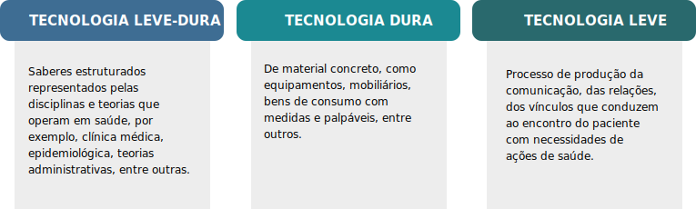

TÓPICO 3
INSTRUMENTOS DE GESTÃO PARA APRIMORAMENTO DAS PRÁTICAS DE GERENCIAMENTO DOS SERVIÇOS DA ESF
TÓPICO 3
INSTRUMENTOS DE GESTÃO PARA APRIMORAMENTO DAS PRÁTICAS DE GERENCIAMENTO DOS SERVIÇOS DA ESF
As tecnologias também podem ser apresentadas da seguinte forma (MERHY; FRANCO, 1997):
Olhando o seu trabalho, não é emergente e marcante a forma como as tecnologias leves, exigem do gestor e como elas são singulares na produção do cuidado na APS?